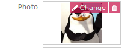
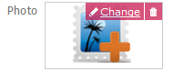

GeneXus makes it possible to store multimedia contents, such as: images, audio or video files. It’s as easy as configuring a variable or attribute based on any of these data types: Image data type, Audio data type and Video data type. These variables or attributes are known as multimedia fields. In web applications, these fields provide two options labeled “Change” and “Clear”; both options are displayed in the UI, by moving the mouse over them:  The “Change” action has an associated pencil icon and can be used to edit the field contents. Upon selecting this option, a dialog box is displayed to indicate a file or URL. The “Clear” action is displayed to the right of the “Change” action with a garbage bin icon, and allows you to clear the value associated with the field. Upon selecting this option, the field is cleared and shows the placeholder image (PlaceHolderImage, PlaceHolderAudio or PlaceHolderVideo, as applicable). Example The appearance of multimedia files can be fully customized, taking into account that:
|